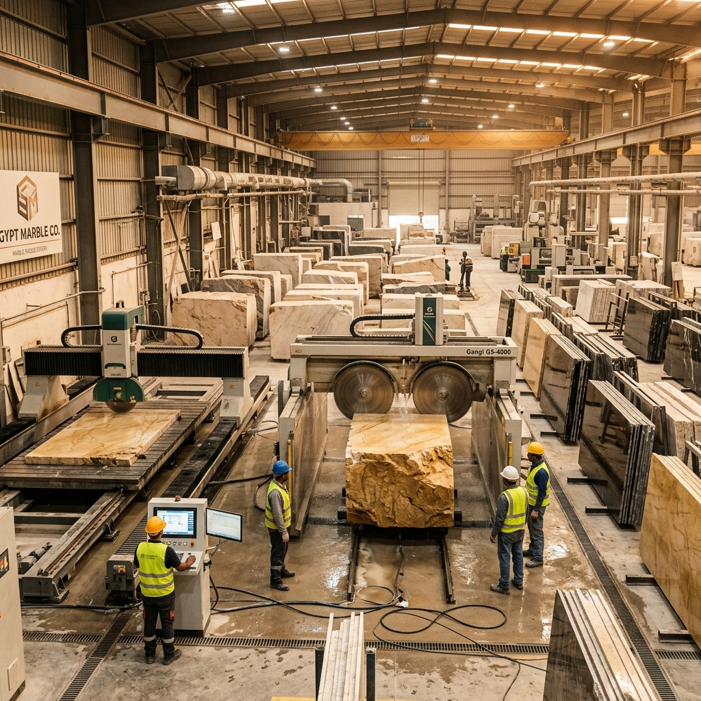

Our factory in Egypt operates under strict international quality control systems. We source premier quarry blocks of Egyptian Marble (such as Galala, Sunny, Silvia, Sinai Pearl) and Egyptian Granite (such as Rosa Hudi, Gandolla, Aswan Black).
From raw block squaring to diamond gangsaw slicing, resin treatment, surface finishing, and waterjet cut-to-size orders, our factory is engineered for large-scale international commercial projects and luxury residential developments.
Gangsaws & Cutters
Monthly Capacity
Thickness Accuracy
Hand-selecting sound, fissure-free marble and granite blocks directly from top Egyptian quarries.
Precision multi-blade diamond gang saws cut blocks into calibrated 2cm, 3cm, or custom thickness slabs.
Automated multi-head polishing lines produce high-gloss mirror finishes, honed, brushed, or bushhammered textures.
Bridge saws and CNC waterjets cut tiles, treads, risers, and countertops to exact project blueprints.
Piece-by-piece inspection for color tone matching, surface flatness, beveling, and absence of micro-fractures.
Carefully numbered and packed into heavy-duty wooden crates ready for export dispatch.